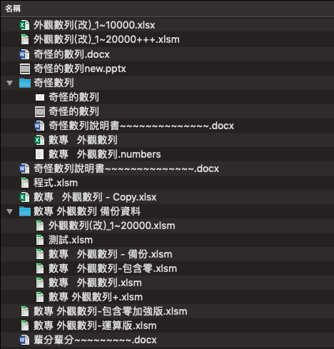
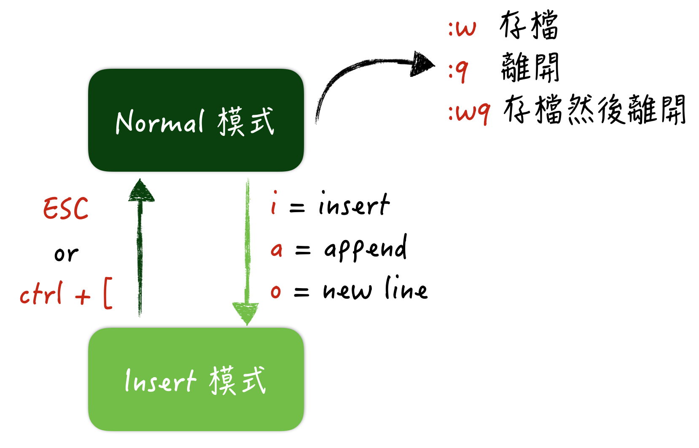
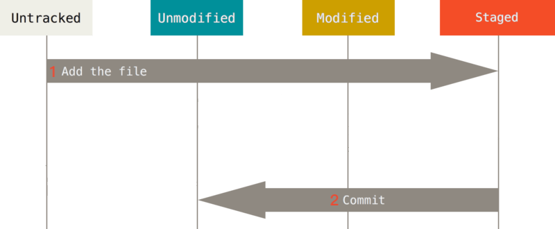
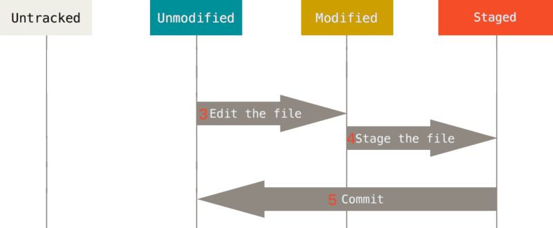
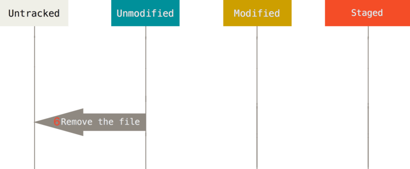

創遊社課
Git
資工 2A
中央創遊 4th 課程長
@artis22
大綱
- 什麼是版本控制？
- shell基本指令
- Vim基本操作
- Git Basics
- Git Advanced
- 其他
什麼是版本控制？
簡單傳統的版本控制方法
我們希望
- 追溯：可以隨時回溯內容
- 同步：方便協作
版本控制類型
- 本地端版本控制系統（LVCS）
- 集中式版本控制系統（CVCS）
- 分散式版本控制系統（DVCS）
本地端版本控制系統（LVCS）

集中式版本控制系統（CVCS）

分散式版本控制系統（DVCS）

那...什麼是 Git 呢？
Shell基本指令
唯一可以使用Git所有功能的地方！
用哪個都可以


| 指令 | 用途 |
|---|---|
| {{c}} |
Vim基本操作
Git預設的文字編輯器
使用方法
$ vim [檔案路徑]
Vim mode
事前準備
儲存庫（Repository）
紀錄檔案狀態的地方
檔案的生命週期

安裝Git
<暫時跳過> 下載網址
初次設定
$ git config --global user.name "Yabasu"
$ git config --global user.email yabasu@gmail.com
我4萌新，可能需要Git的教學
$ git help
Git Basics
clone已經存在的repo
$ git clone https://github.com/Artis24106/ncugcGit.git
建立repo
$ cd <目標資料夾的路徑>
$ git init
產生.git資料夾
一切資料都存在裡面
$ ls -al
如果後悔了...
把.git資料夾刪除即可
$ rm -r .git
檢查檔案狀態
$ git status
新增一個檔案試試看
$ touch whiteBear.txt
$ git status
新檔案處於Untracked的狀態
追蹤（Track）新檔案
$ git add whiteBear.txt
$ git status
whiteBear.txt已經被預存
提交（Commit）預存檔案
$ git commit
$ git commit -m "I commit a white bear."
複習一下
修改檔案看看
$ vim whiteBear.txt
$ git status
檢視更詳細的修改資訊
$ git diff # 檢視「未預存」的更動
$ git diff --cached # 檢視「已預存」的更動
$ git commit -m "Modified whiteBear.txt"
複習一下
刪除檔案
rm vs. git rm
$ rm whiteBear.txt
$ git rm whiteBear.txt
$ git rm \*.txt # 刪除該目錄底下所有.txt結尾的檔案
複習一下
檔案移動/重新命名
mv vs. git mv
$ git mv whiteBear.txt blackBear.txt
$ mv whiteBear.txt blackBear.txt
$ git rm whiteBear.txt
$ git add blackBear.txt
使用 git mv 可以節省不少步驟
檢視提交的歷史紀錄
$ git log
$ git log --graph
復原
取消預存
$ git reset HEAD whiteBear.txt
復原更動
$ git checkout -- whiteBear.txt
注意！這個指令是不可逆的！
已提交的檔案大多可以復原
未提交的檔案通常無法復原
遠端協作
remote
還記得clone嗎？
從遠端下載資料
$ git fetch
僅將資料下載，並未加入專案
資料合併
$ git merge
拉取資料
$ git pull # pull = fetch + merge
推送資料
$ git push
標籤
tag
輕量級標籤
$ git tag [標籤名稱]
含附註標籤
$ git tag [標籤名稱] -a
$ git tag [標籤名稱] -am "標籤訊息"
通常用來標記版本號
別名
alias
## 為現有指令取別名
$ git config --global alias.st status
## 自定義新指令
$ git config --global alias.yabasu 'log --graph'
## 自定義外部指令
$ git config --global alias.mkbear '!touch bear'
## 顯示所有別名
$ git config --get-regexp alias
## 刪除特定別名
$ git config --global --unset alias.mkbear
分支
branch


建立分支
$ git branch [分支名稱]
切換分支
$ git checkout [分支名稱]
建立並切換分支
$ git checkout -b [分支名稱]
查看所有分支
$ git branch
刪除分支
$ git branch -d [分支名稱]
合併分支
$ git merge [分支名稱]
合併衝突
解決方法 -> 溝通（物理）
$ git checkout --theirs [衝突檔案]
$ git checkout --ours [衝突檔案]
如果在合併前已經打完架了
$ git merge --Xours/--Xtheirs [分支名稱]
變基
rebase
基本用法
$ git rebase [分支名稱]
它還可以
## 找出A到AB共同祖先之後的修改，重放到C上
$ git rebase --onto [分支C] [分支B] [分支A]
使用原則
不要 rebase 已經在遠端的提交
「If you follow that guideline, you’ll be fine. If you don’t, people will hate you, and you’ll be scorned by friends and family.」
merge vs. rebase
merge: 紀錄實際發生的事情
rebase: 紀錄專案的故事
撿櫻桃(？)
cherry-pick
自助餐的感覺
$ git cherry-pick [commit_SHA1]
忽略清單
.gitignore
# 忽略所有名為index的文件或資料夾
index
a/b/index
a/index/index.html
# 忽略所有指定資料夾裡的所有檔案
Logs/
Logs/Blizzard Updater Log.html
Agent/Logs/Switcher.log
# 忽略絕對路徑下的特定檔案
/whiteBear.html
whiteBear.html 會被忽略
template/whiteBear.html 不會被忽略
# 忽略所有.txt文件
*.txt
MISSION_AUDIO.txt
tilesets/Dungeon_A1.txt
# ** = 任意路徑
/img/**/icon.png
img/icon.png
img/a/icon.png
img/a/b/icon.png
# 字元集合
/[Cc]olors.png
colors.png
Colors.png
# 邏輯負運算子(!)
/*.jpg
/!kotoha.jpg
kotoha.jpg 不會被忽略
saitou.jpg 會被忽略
來自官方文件的範例
/*
!/foo
/foo/*
!/foo/bar
/foo/bar以外的內容會被忽略
懶得自己寫.gitignore？
已經有人幫你寫好惹！停止追蹤
git rm --cached [檔案名稱]
忽略忽略文件
git add -f [檔案名稱]
不錯的教學文件
Bitbucket重置
reset, checkout
官方文件寫得很好
掌握回到過去&穿越時空的能力
但是...
到過去之後就回不來了
引用日誌
reflog
每當 HEAD 移動 reflog 就會有紀錄
$ git reflog
$ git log -g
引用日誌僅存在本地端
儲藏
stash
$ git stash
$ git stash -u # 包含untracked file
$ git stash list
$ git stash apply
$ git stash drop [stash名稱]
$ git stash pop # pop = apply + drop
建立新分支繼續工作
$ git stash branch [分支名稱]
清理
clean
刪除 untracked file
$ git clean -d -f
$ git clean -d -n # 模擬刪除情況
$ git clean -d -x # 連被 .gitignore 忽略的檔案也刪除
抓戰犯
blame
$ git blame [檔案名稱]
$ git blame -L 2,5 [檔案名稱]
能快樂地溝通了
搜尋
grep
grep使用方法
$ git grep [搜尋內容]
$ git grep -n [搜尋內容] # 顯示行號
$ git grep --count [搜尋內容] # 顯示文件中出現次數
小比較
grep vs. git grep
git grep 比較快、可以在任意版本中搜尋
其他
others
Git server
GithubGUI
Git 運作方式
資源1 資源2Git X Unity
是野生的簡報！ GitHub for UnitySHA1
Secure Hash Algorithm 1
SHA1 GitのSHA1